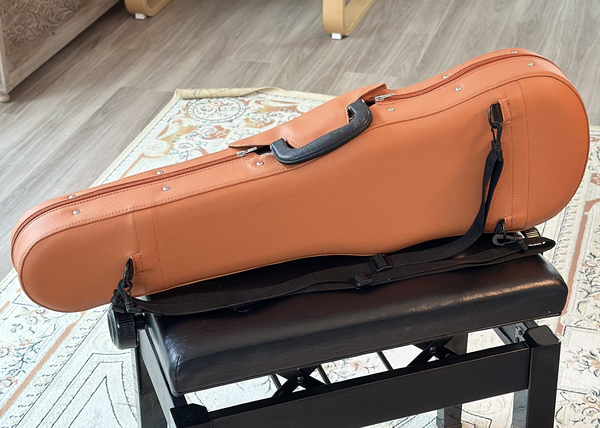
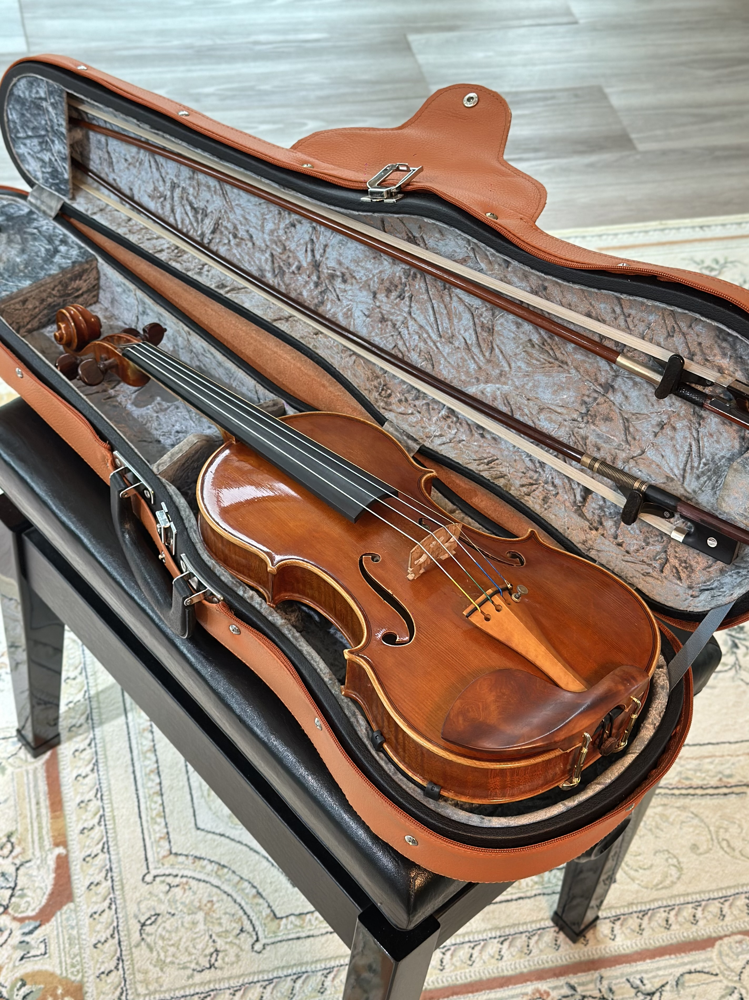
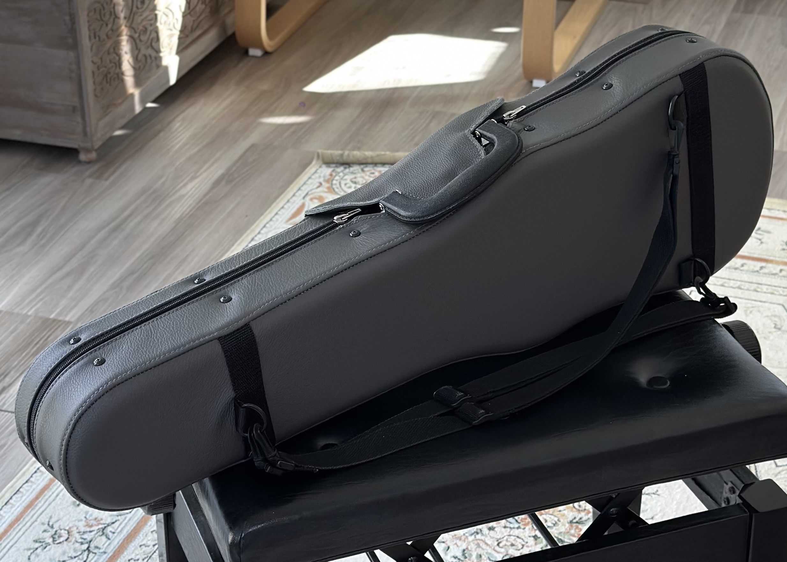
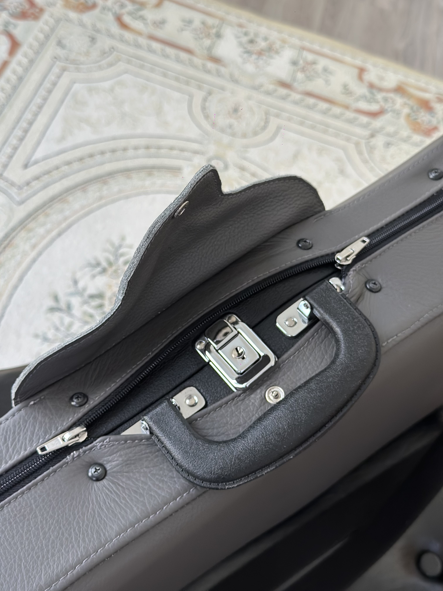
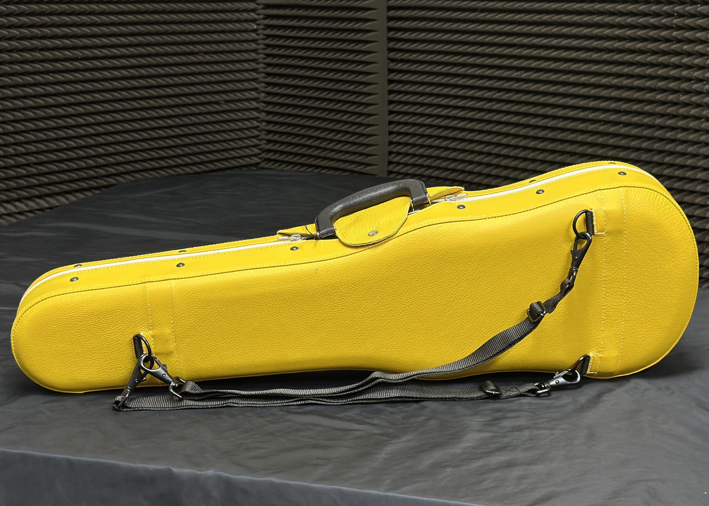
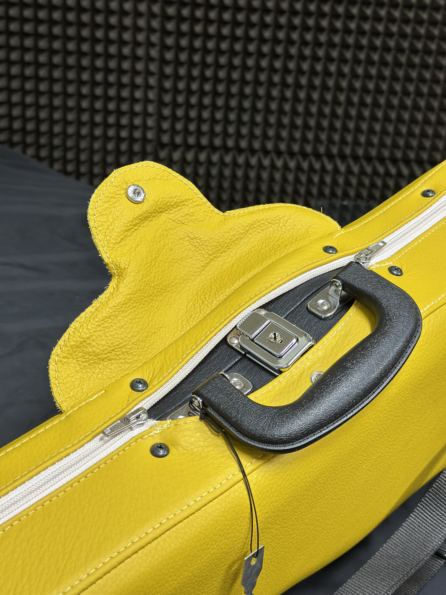
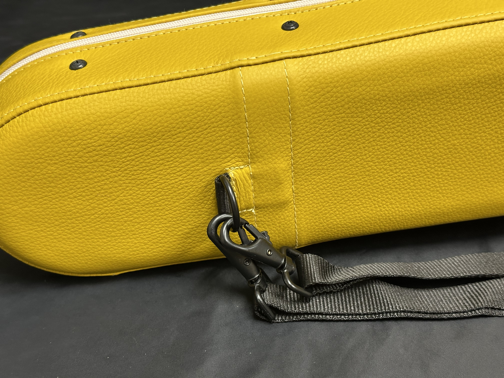

STORY
絲媛 SIYÆ 源自職業樂團豐富的演出經驗，以及近30國出國移動與舞台經驗。 在不同城市、不同音樂廳之間奔波後，更深刻體會到： 在音樂廳台上演得好，台下的琴盒也很重要。
琴盒不只是收納與保護工具，而是演奏者在旅程中的延伸。 它承載樂器，也承載演出前的秩序、專注與安全感。
傳統琴盒在長時間移動與使用下，容易產生車線鬆動與結構疲乏。 因此 SIYÆ 選擇以手工拉皮工藝重新定義琴盒結構， 讓皮革張力更完整，結構更穩定，也更符合專業演奏者的移動需求。
絲媛 SIYÆ 源自職業樂團豐富的演出經驗，以及近30國出國移動與舞台經驗。 在不同城市、不同音樂廳之間奔波後，更深刻體會到： 在音樂廳台上演得好，台下的琴盒也很重要。
琴盒不只是收納與保護工具，而是演奏者在旅程中的延伸。 它承載樂器，也承載演出前的秩序、專注與安全感。
傳統琴盒在長時間移動與使用下，容易產生車線鬆動與結構疲乏。 因此 SIYÆ 選擇以手工拉皮工藝重新定義琴盒結構， 讓皮革張力更完整，結構更穩定，也更符合專業演奏者的移動需求。
工廠成立30年以上，具備高訂製作經驗與穩定品質保證。 每一只琴盒皆由工匠獨立製作，從選皮、裁切、拉皮、五金安裝至完成， 皆經過多道細緻工序。
嚴選頂級頭層牛皮，一牛一盒，全手工拉皮製作。 採用天然染劑處理，親膚不刺激、不易染色， 並具備防潑水、耐刮、耐磨的日常使用特性。
拉鍊與背帶系統皆採用全金屬五金，非塑膠結構， 確保長期使用時的穩定度與高端質感。




愛馬仕橘｜最具舞台感與藝術張力的高訂版本



太空灰｜低調、理性、專業演奏者氣質





芬迪黃｜最具品牌識別度的私人高訂系列
除標準三色外，提供專屬客製化顏色與皮革搭配服務。 可依個人風格、舞台需求或收藏偏好進行設計。
每件客製作品皆為獨立製作流程，需對應專屬選材、調色與手工製作工序。
IG 追蹤＋按讚＋留言「SIYÆ」可獲 9 折專屬折扣碼
CARD PAYMENT LINE ORDER
CONNECT
FB: 張絲媛
LINE: fendi-chang
IG: ssuyuan_chang_fendi
THREADS: ssuyuan_chang_fendi
CONTACT FOR PURCHASE & CUSTOM REQUEST
FOR CUSTOM COLOR / PERSONALIZED DESIGN AVAILABLE